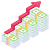
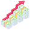

SOGETI
è un'azienda di consulenza IT che offre una gamma completa di servizi IT, tra cui consulenza,
sviluppo software, outsourcing IT. L'azienda è specializzata nell'innovazione tecnologica e offre
ai propri clienti le ultime tecnologie per migliorare le proprie attività.
PCSNET
è un'azienda di sviluppo software che offre una gamma completa di servizi IT, tra cui sviluppo software,
consulenza IT, e-commerce. L'azienda è specializzata nello sviluppo di soluzioni software innovative per
le aziende di qualsiasi dimensione.
SOFTWARE ENGINEERING
è un'azienda di sviluppo software che offre una gamma completa di servizi IT, tra cui sviluppo software,
consulenza IT, outsourcing IT. L'azienda è specializzata nello sviluppo di soluzioni software innovative
per i settori della pubblica amministrazione e della sanità.
READYTEC
è un'azienda di sviluppo software che offre una gamma completa di servizi IT, tra cui sviluppo software,
consulenza IT, e-commerce. L'azienda è specializzata nello sviluppo di soluzioni software innovative per il
settore della moda e del lusso.
44 TECHNOLOGIES
44 Technologies è un'azienda di sviluppo software che offre una gamma completa di servizi IT,
tra cui sviluppo software, consulenza IT e sicurezza informatica. L'azienda è specializzata nello sviluppo
di soluzioni software innovative per la sicurezza informatica.
2B2S
è un'azienda di sviluppo software che offre una gamma completa di servizi IT, tra cui sviluppo software,
consulenza IT e data science. L'azienda è specializzata nello sviluppo di soluzioni software innovative per
l'analisi dei dati.
ICT Solutions
Sviluppo software, Consulenza IT